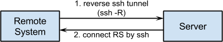

이 글에서 언급하고자 하는 원격 시스템이란 유선통신 연결이 매우 어려운 지역에서 상용이동통신망을 이용하여 서버와 통신하는 장비를 의미한다. 원격시스템은 스스로 센서를 가지고 있을 수도 있으며, 근거리에서 시리얼 통신을 이용하여 데이터를 수집할 수 있다. 이렇게 수집한 데이터를 서버로 전송하고 서버에서 들어오는 제어신호를 처리할 수 있다. 원격 시스템은 ubuntu 리눅스를 OS로 사용하는 것을 가정한다.
원격 시스템들은 원격지에 분산되어 있기 때문에 시리얼 콘솔을 이용해서 장비에 접근하는 것이 번거롭고 시간을 많이 소비하게 된다. 때문에 원격에서 시스템에 접근할 수 있는 방법을 제공하여야만 하며 이 경우, 디버깅과 업데이트가 용이해진다.
하지만, 원격 시스템은 상용이동통신망을 이용하기 때문에 외부에서 직접 접근이 불가능하다. 이런 경우에 접근을 할 수 있는 방법으로 reverse ssh tunnel 이 있다. 먼저 원격 시스템에서 서버로 “ssh -R” 옵션을 사용하여 역방향 터널을 만든다. 이렇게 하면, 원격시스템의 특정 포트에서 ssh 접속을 대기하도록 설정한다.
ssh 는 보통 ssh 서버에 접속해 원격에서 서버를 관리할 목적으로 많이 사용된다. 클라이언트와 서버 사이에 교환되는 패킷들을 암호화하기 때문에 telnet보다 훨씬 안전하여 많이 사용되는 명령어이다. 하지만, ssh는 telnet 처럼 단순한 기능만을 제공하는 것은 아니다. 본 절에서는 ssh -R 옵션을 통해 reverse 터널을 열어 사용하는 방법을 기술하고자 한다.
두 host A와 B가 있을때 A는 공인IP를 가지고 있지만, B는 사설IP만을 가지고 있다고 할 경우, 일반적으로 B에서 A로만 접근이 가능하다. 하지만, Reverse tunnel을 생성할 경우 A에서 B로의 접근이 가능해 진다. 예를 들어 설명하면, 여러분 가정에 사설IP만을 가지고 있는 리눅스 장비가 있을 경우, 외부에서 집에 있는 리눅스로 접속하여 관리를 할 수 있다.
-R 옵션의 명령어 형태는 아래와 같다. 이 명령은 아래 그림의 client에서 수행하는 것이다.
ssh 터널은 다양한 용도로 사용된다. 위의 그림에서 ssh -fN -R 40122:localhost:22 root@emon-it.net
host A에서 host B의 user b로 로그인하는 것을 가정하고 아래와 같은 명령을 수행하면 A에서 B로 ssh 접속을 할 때 비밀번호를 입력하지 않아도 된다. 아래는 모두 host A에서 수행할 일들이다.
$ ssh-keygen -t rsa
-t : 생성할 Key의 type (rsa1, dsa, ecdsa, rsa(for protocol 2))
물어보는 내용에 대해 전부 엔터만 입력하면 된다.
$ ssh user_b@host_B mkdir -p .ssh
$ cat .ssh/id_rsa.pub | ssh user_b@host_B 'cat >> .ssh/authorized_keys'
Note
루트권한으로 수행하는 프로세스내에서 원격지로 ssh 접속을 시도할 경우는 루트 계정에서 위의 작업들을 수행해 주어야 한다. 즉 host A에서 어느 계정으로 위의 과정을 수행하는가도 중요하다. 루트 계정에서 자동 로그인을 하기 위해서는 아래 명령어를 먼저 수행한 후 위 과정을 실행하라.
$ sudo su -
ssh -R 옵션 reverse ssh tunneling
주기적인 접근 : 역방향 대기?